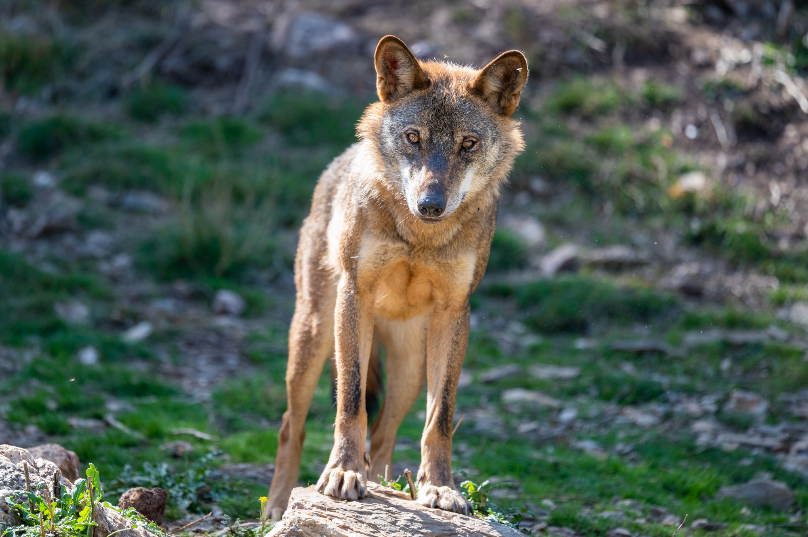
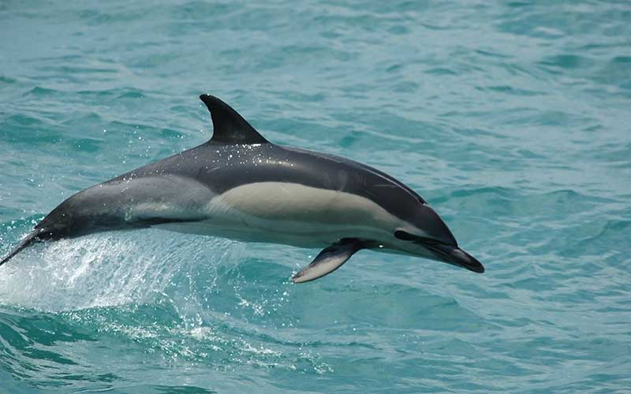
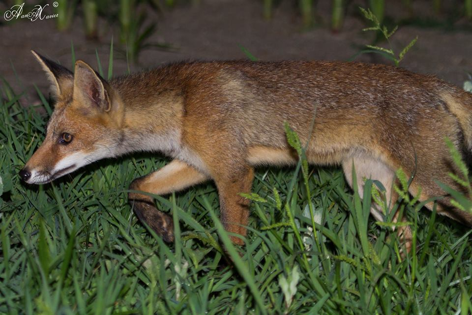
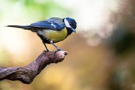

Portugal apresenta uma grande diversidade de mamíferos, distribuídos por diferentes habitats que refletem as variações climáticas e geográficas do país. Os mamíferos desempenham papéis ecológicos importantes, desde predadores de topo até herbívoros que influenciam a vegetação local. Para uma melhor organização, os mamíferos podem ser divididos em três categorias: mamíferos de grande porte, mamíferos de pequeno e médio porte e mamíferos aquáticos.
Fauna de Portugal



Mamíferos de Grande Porte: Entre os mamíferos de grande porte, destaca-se o lobo-ibérico, uma subespécie do lobo europeu em risco de extinção. Encontrado exclusivamente na Península Ibérica, o lobo-ibérico é símbolo da fauna portuguesa, especialmente nas zonas montanhosas do norte e centro do país, como no Parque Nacional da Peneda-Gerês e na Serra da Malcata. Desempenha um papel fundamental como regulador ecológico, controlando populações de herbívoros, como javalis e veados.
O javali, amplamente distribuído por Portugal, é outro mamífero de grande porte, adaptando-se a vários ambientes, desde florestas até zonas agrícolas. Este herbívoro controla a vegetação e serve como presa para predadores. O veado-vermelho, também presente nas áreas florestais do interior, é outro grande herbívoro que habita áreas de caça e reservas naturais, desempenhando um papel importante na dinâmica das populações vegetais e animais.
Mamíferos de Pequeno e Médio Porte: Portugal possui uma vasta gama de mamíferos de pequeno e médio porte, com funções ecológicas essenciais, como polinização, dispersão de sementes e controle de insetos. A raposa, um canídeo adaptável a diversos habitats, é comum tanto em áreas rurais quanto urbanas. Já o ouriço-cacheiro, um mamífero noturno encontrado em jardins e vegetação densa, controla populações de insetos e plantas pequenas.
Aves de Portugal: Portugal é um ponto de passagem crucial para várias espécies de aves migratórias e abriga uma grande diversidade de aves típicas e endêmicas, que habitam o país ao longo do ano.
Aves Migratórias: Portugal serve como ponto de descanso para muitas aves migratórias, como o flamingo-comum, que se encontra nas zonas húmidas do sul do país, e o cagarro, uma ave marinha que migra entre o Atlântico e o Mediterrâneo. Essas aves desempenham um papel vital no controle de populações de insetos e na dispersão de sementes.
Aves Típicas Portuguesas: O país também abriga aves endêmicas, como o abre-assas-comum, um predador que ajuda a controlar as populações de pequenos mamíferos e aves, e o pisco-de-peito-ruivo, uma pequena ave conhecida pelo seu canto melodioso. Estas espécies são essenciais para a manutenção do equilíbrio ecológico.
Reptéis e Anfíbios de Portugal: Portugal é lar de várias espécies de répteis e anfíbios adaptados a diversos habitats, como a Culebra-de-escamas-pequenas e a Lagartixa-de-patas-rubras, comuns em zonas secas e de vegetação rasteira. A Cegonha-de-cabeça-vermelha, uma serpente venenosa, habita o sul de Portugal. Os anfíbios, como as rãs e salamandras, desempenham um papel crucial no controle de pragas e na alimentação de aves e mamíferos.
Espécies Marinhas de Portugal: A costa de Portugal é rica em biodiversidade marinha, incluindo peixes como o sargo, dourada e bacalhau, importantes tanto para a fauna local quanto para a pesca comercial. Além disso, o país é habitat de diversas espécies de golfinhos e baleias, com destaque para o golfinho-comum e a baleia-de-barbatanas, frequentemente observados nas regiões costeiras. As algas marinhas, como a posidônia, formam florestas subaquáticas e desempenham um papel crucial no ecossistema marinho. Contudo, a poluição e a sobrepesca têm ameaçado essas espécies, tornando urgente a implementação de medidas de proteção e gestão sustentável da biodiversidade marinha.